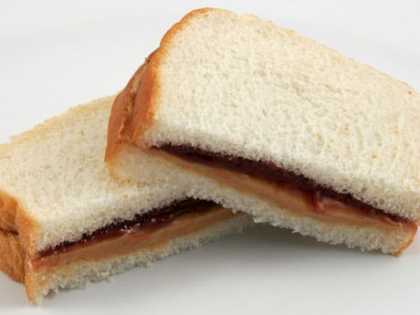

Peanut Butter and Jelly Sandwich

Description
A peanut butter and jelly sandwich (PB&J) consists of peanut butter and fruit preserves—jelly—spread on bread.
The sandwich may be open-faced, made of a single slice of bread folded over, or made between two slices of bread.
Ingredients
- 2 slices of sandwich bread
- 2 tablespoons of peanut butter
- 2 tablespoons of jelly
Steps
- Spread the peanut butter on one slice of bread.
- Spread the jelly on the other slice of bread.
- Put the two slices together so the peanut butter and jelly touch.
- Enjoy!